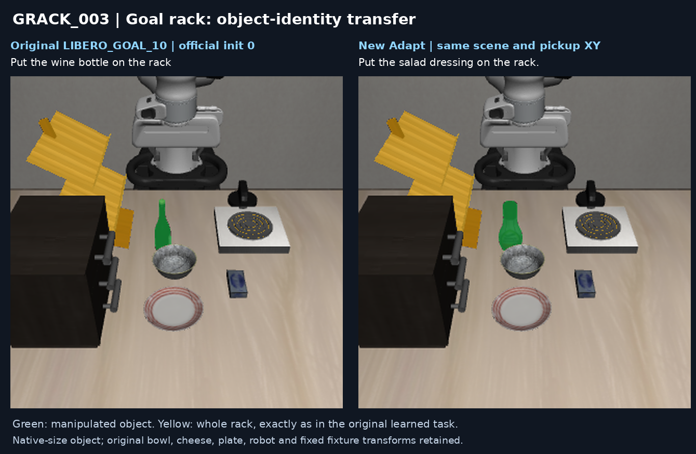

Evaluation definition and caveats
Success requires the object to be released without gripper contact and supported by the actual rack upper deck, with its body origin inside the upper-deck footprint, for five consecutive control steps. This is a short released-support check, not a long-duration settling test.
The narrow original wine-specific goal region rejected physically supported replacement objects. Before policy evaluation, an Adapt-only annotation was defined from the actual upper deck. The physical scene, collision assets and whole-rack body mask were unchanged. The original wine-specific native On remains an auxiliary diagnostic: 0/5 for each displayed task, not the reported physical Adapt success rate.
Mask caveat: the original GT segmentation pipeline includes disconnected pixels around the stove burner. These occur in policy input as well as the video overlay. The rack body binding is correct; pixel-level mask quality still needs separate investigation. The videos and outcomes below preserve the evaluated pipeline unchanged.
Same RAIN multi-scale + mask-augmentation action/progress checkpoints; seeds 7–11; maximum 520 controls; no success-based retries. GRACK_003 uses new_salad_dressing, a different asset from original LIBERO-Object's salad_dressing.
GRACK_002 · 5/5 · 100%
Put the ketchup on the rack.
Same ketchup asset as original LIBERO_OBJECT_05.
Original → new task. Green: manipulated object; amber: rack destination. Click to enlarge.
GRACK_003 · 4/5 · 80%
Put the salad dressing on the rack.
Uses new_salad_dressing, not the salad_dressing asset in original LIBERO_OBJECT_03.

Original → new task. Green: manipulated object; amber: rack destination. Click to enlarge.
Records
Task / success-rate table · Public summary and source / published video hashes
Source recordings remain unchanged. Published MP4 containers use faststart for streaming, without re-encoding; decoded frames are identical to the source. Selected Tasks has not been changed.